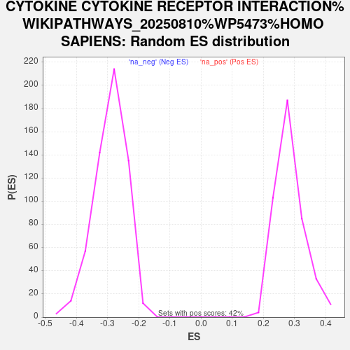

Profile of the Running ES Score & Positions of GeneSet Members on the Rank Ordered List
| Dataset | Combo_vs_Naive_Ranked_Genes |
| Phenotype | NoPhenotypeAvailable |
| Upregulated in class | na_pos |
| GeneSet | CYTOKINE CYTOKINE RECEPTOR INTERACTION%WIKIPATHWAYS_20250810%WP5473%HOMO SAPIENS |
| Enrichment Score (ES) | 0.61540645 |
| Normalized Enrichment Score (NES) | 2.1675303 |
| Nominal p-value | 0.0 |
| FDR q-value | 1.9860386E-4 |
| FWER p-Value | 0.002 |
| SYMBOL | RANK IN GENE LIST | RANK METRIC SCORE | RUNNING ES | CORE ENRICHMENT | |
|---|---|---|---|---|---|
| 1 | GDF15 | 24 | 29.349 | 0.0398 | Yes |
| 2 | CXCR4 | 39 | 28.071 | 0.0784 | Yes |
| 3 | CXCL8 | 53 | 26.441 | 0.1148 | Yes |
| 4 | TNFRSF21 | 77 | 25.136 | 0.1487 | Yes |
| 5 | CCR7 | 105 | 24.283 | 0.1811 | Yes |
| 6 | IL13RA2 | 118 | 23.808 | 0.2138 | Yes |
| 7 | TNFRSF9 | 119 | 23.770 | 0.2473 | Yes |
| 8 | LIF | 142 | 22.851 | 0.2780 | Yes |
| 9 | CX3CL1 | 216 | 21.144 | 0.3031 | Yes |
| 10 | CSF1 | 478 | 16.831 | 0.3100 | Yes |
| 11 | FAS | 545 | 16.057 | 0.3283 | Yes |
| 12 | IL6ST | 605 | 15.373 | 0.3462 | Yes |
| 13 | TNFRSF10B | 711 | 14.331 | 0.3596 | Yes |
| 14 | TNFRSF12A | 756 | 14.009 | 0.3765 | Yes |
| 15 | TNFRSF1B | 836 | 13.459 | 0.3903 | Yes |
| 16 | IL1R1 | 837 | 13.457 | 0.4093 | Yes |
| 17 | CXCL2 | 846 | 13.392 | 0.4276 | Yes |
| 18 | CXCL3 | 849 | 13.373 | 0.4463 | Yes |
| 19 | CCL2 | 997 | 12.286 | 0.4541 | Yes |
| 20 | IL1A | 1117 | 11.510 | 0.4627 | Yes |
| 21 | IL34 | 1133 | 11.411 | 0.4778 | Yes |
| 22 | CXCL12 | 1181 | 11.160 | 0.4905 | Yes |
| 23 | IL2RG | 1369 | 10.045 | 0.4926 | Yes |
| 24 | IL17RA | 1416 | 9.834 | 0.5034 | Yes |
| 25 | CXCL5 | 1421 | 9.818 | 0.5170 | Yes |
| 26 | IL6 | 1521 | 9.412 | 0.5239 | Yes |
| 27 | TGFB1 | 1589 | 9.090 | 0.5324 | Yes |
| 28 | TGFBR2 | 1642 | 8.846 | 0.5415 | Yes |
| 29 | IL11 | 1664 | 8.718 | 0.5524 | Yes |
| 30 | IL17RB | 1702 | 8.593 | 0.5621 | Yes |
| 31 | IL10RB | 1818 | 8.161 | 0.5662 | Yes |
| 32 | CXCL11 | 1969 | 7.675 | 0.5673 | Yes |
| 33 | NGFR | 1994 | 7.563 | 0.5764 | Yes |
| 34 | CCL20 | 2050 | 7.354 | 0.5833 | Yes |
| 35 | EPOR | 2069 | 7.283 | 0.5923 | Yes |
| 36 | IL17RC | 2120 | 7.129 | 0.5992 | Yes |
| 37 | TNFRSF25 | 2262 | 6.720 | 0.5995 | Yes |
| 38 | TNFRSF13C | 2627 | 5.713 | 0.5842 | Yes |
| 39 | IL11RA | 2702 | 5.548 | 0.5872 | Yes |
| 40 | IL6R | 2715 | 5.528 | 0.5942 | Yes |
| 41 | LEPR | 2749 | 5.476 | 0.5998 | Yes |
| 42 | TNFRSF10A | 2762 | 5.454 | 0.6067 | Yes |
| 43 | IFNGR1 | 2772 | 5.428 | 0.6138 | Yes |
| 44 | ACVR1C | 2938 | 5.011 | 0.6102 | Yes |
| 45 | INHBE | 2966 | 4.936 | 0.6154 | Yes |
| 46 | PRLR | 3266 | 4.349 | 0.6023 | No |
| 47 | RELT | 3272 | 4.332 | 0.6081 | No |
| 48 | IFNAR1 | 3536 | 3.826 | 0.5965 | No |
| 49 | BMP4 | 3648 | 3.635 | 0.5945 | No |
| 50 | IL23A | 3662 | 3.617 | 0.5987 | No |
| 51 | CCL24 | 3671 | 3.601 | 0.6033 | No |
| 52 | TNFRSF11A | 3716 | 3.529 | 0.6054 | No |
| 53 | ACVR2A | 3791 | 3.404 | 0.6055 | No |
| 54 | CLCF1 | 3831 | 3.354 | 0.6077 | No |
| 55 | IL15RA | 3913 | 3.228 | 0.6070 | No |
| 56 | CSF1R | 3967 | 3.162 | 0.6080 | No |
| 57 | CXCL14 | 4259 | 2.741 | 0.5932 | No |
| 58 | ACKR3 | 4480 | 2.467 | 0.5825 | No |
| 59 | IL7 | 4936 | 1.956 | 0.5560 | No |
| 60 | IL13RA1 | 5659 | 1.272 | 0.5113 | No |
| 61 | TNFRSF18 | 5876 | 1.109 | 0.4989 | No |
| 62 | ACVR1 | 6315 | 0.788 | 0.4719 | No |
| 63 | CCR10 | 6370 | 0.753 | 0.4694 | No |
| 64 | IL17D | 6374 | 0.750 | 0.4703 | No |
| 65 | BMPR2 | 6605 | 0.624 | 0.4564 | No |
| 66 | CCL26 | 6657 | 0.591 | 0.4539 | No |
| 67 | INHBB | 6884 | 0.466 | 0.4400 | No |
| 68 | IL20RB | 7284 | 0.256 | 0.4147 | No |
| 69 | IFNGR2 | 7397 | 0.207 | 0.4078 | No |
| 70 | GDF9 | 7573 | 0.136 | 0.3967 | No |
| 71 | BMP8B | 7982 | 0.000 | 0.3705 | No |
| 72 | TGFBR1 | 8129 | -0.044 | 0.3611 | No |
| 73 | TSLP | 8184 | -0.060 | 0.3578 | No |
| 74 | IL15 | 8331 | -0.109 | 0.3485 | No |
| 75 | TNFRSF19 | 8722 | -0.263 | 0.3238 | No |
| 76 | INHA | 8870 | -0.327 | 0.3148 | No |
| 77 | INHBA | 10002 | -1.124 | 0.2436 | No |
| 78 | AMH | 10038 | -1.156 | 0.2429 | No |
| 79 | LTBR | 10096 | -1.216 | 0.2410 | No |
| 80 | GDF11 | 10476 | -1.636 | 0.2189 | No |
| 81 | CXCL16 | 10481 | -1.645 | 0.2210 | No |
| 82 | CNTFR | 10710 | -1.909 | 0.2090 | No |
| 83 | GHR | 10811 | -2.054 | 0.2054 | No |
| 84 | ACVR1B | 11026 | -2.373 | 0.1950 | No |
| 85 | IFNAR2 | 11214 | -2.693 | 0.1868 | No |
| 86 | TNFSF10 | 11364 | -2.966 | 0.1813 | No |
| 87 | TNFRSF1A | 11522 | -3.257 | 0.1758 | No |
| 88 | IL7R | 11941 | -4.227 | 0.1549 | No |
| 89 | ACVR2B | 13483 | -8.508 | 0.0677 | No |
| 90 | TNFRSF11B | 13887 | -10.016 | 0.0558 | No |
| 91 | ANP32B | 15159 | -17.134 | -0.0019 | No |
| 92 | BMPR1A | 15538 | -22.764 | 0.0059 | No |
